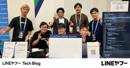

LINEヤフー Tech Blog (LY Corporation Tech Blog
https://techblog.lycorp.co.jp
LINEヤフー株式会社のサービスを支える、技術・開発文化を発信しています。
フィード

AIコードレビュー企画によるブース運営（DroidKaigi 2025）
LINEヤフー Tech Blog (LY Corporation Tech Blog
2025年9月10日（水）〜9月12日（金）の3日間にわたって開催されたDroidKaigi 2025に、LINEヤフー株式会社はゴールドスポンサーとして参加しました。イベント期間中は、たくさんの方に...
3日前
AthenzエンジニアはなぜKubestronautに挑戦したのか？ 1
1
LINEヤフー Tech Blog (LY Corporation Tech Blog
こんにちは。Security Platform Engineerをしている金 廷祐（Kim, Jeongwoo）です。私は社内のプライベートクラウド環境で、アクセス制御の中核を担うオープンソースプロジ...
4日前
AIで進める技術的負債の返済 ― 「いつかやる」を「今できる」に ― 1
LINEヤフー Tech Blog (LY Corporation Tech Blog
こんにちは。Yahoo!フリマでバックエンド開発を担当している高木です。ソフトウェア開発において避けられない「技術的負債」。「いつかやる」と後回しにしているうちに積み重なり、気づいたら大きな負担になっ...
6日前

LINEのアプリ開発を支えるコードオーナー管理・評価編 〜 PRのコードオーナー不足を90％削減！
LINEヤフー Tech Blog (LY Corporation Tech Blog
はじめにこんにちは、iOSアプリエンジニアの羽柴です。本記事では、プルリクエストにおけるコードオーナー不足を防ぐために導入したGitHub Actionsの効果測定を行った話を紹介します。コードオーナ...
10日前
LINEヤフーエンジニアによるKubeCon + CloudNativeCon Japan 2025参加レポート
LINEヤフー Tech Blog (LY Corporation Tech Blog
はじめにこんにちは。プライベートクラウドの開発運用およびOSPO（Open Source Program Office）を兼任している早川です。KubeCon + CloudNativeCon（以下、...
11日前
2025年10月の技術系イベント予定
LINEヤフー Tech Blog (LY Corporation Tech Blog
LINEヤフー株式会社では、技術に関するイベントや勉強会の主催・協賛などを行っています。最新情報は各リンク先でご確認ください。タイミングによっては、申し込み開始前や既に満席となっていることがあります。...
13日前
ML Tech Talk #1 を開催しました！（イベントレポート）
LINEヤフー Tech Blog (LY Corporation Tech Blog
こんにちは！ LINEヤフー Developer Relations の井上雄飛です。9月8日に「ML Tech Talk #1」というイベントを開催しました。このイベントは、LINEヤフーが取り組む...
18日前
Claude Codeで体感するAIペアプログラミング（生成AI活用ワークショップ開催レポート）
LINEヤフー Tech Blog (LY Corporation Tech Blog
2025年8月19日に生成AI活用ワークショップを社内で開催したのでレポートします。ワークショップの目的と進行方式今回のワークショップの目的は、特定の機能を習得するにとどまらず、メンバー全体が生成AI...
18日前
エンジニアとデザイナーのアウトプットを支える舞台裏（Tech Week 2025 開催後記）
LINEヤフー Tech Blog (LY Corporation Tech Blog
こんにちは！Tech Week 2025の全体を統括した、Developer Relations（DevRel）の善積です。2025年6月30日から7月4日にかけて開催された Tech Week 20...
25日前
LINEヤフーのAI技術の現在、Tech-Verse 2025参加レポート
LINEヤフー Tech Blog (LY Corporation Tech Blog
こんにちは。LINE PlusのLINE AI LABでLLMエージェント関連サービスの開発を担当しているSumin Shinです。私は、7月に東京で開催されたTech-Verse 2025に、現地を...
25日前
iOSDC Japan 2025 特別企画 「AI時代、iOSアプリエンジニアがこれから生き残るには」
LINEヤフー Tech Blog (LY Corporation Tech Blog
2025年9月19日（金）から21日（日）にかけて開催される iOSDC Japan 2025 にて、LINEヤフー株式会社はプラチナスポンサーを務めます。このたび、iOSDC Japan 2025の...
1ヶ月前
Vespaを活用したYahoo!フリマのベクトル検索 —— 類似画像で広がる商品探索
LINEヤフー Tech Blog (LY Corporation Tech Blog
こんにちは。LINEヤフー株式会社の鈴木です。業務ではYahoo!オークションとYahoo!フリマの検索改善を担当しています。最近、Yahoo!フリマで「見た目が似ている商品を探せる機能」をリリースし...
1ヶ月前
iOSDC Japan 2025 登壇内容と extension DC 開催のお知らせ
LINEヤフー Tech Blog (LY Corporation Tech Blog
こんにちは。Developer Relations部のaikawaです。2025年9月19日（金）から21日（日）にかけて開催されるiOSDC Japan 2025にて、LINEヤフー株式会社はプラチ...
1ヶ月前
コード品質向上のテクニック：第72回 概念的循環依存 鶏が先か、卵が先か？
LINEヤフー Tech Blog (LY Corporation Tech Blog
こんにちは。コミュニケーションアプリ「LINE」のモバイルクライアントを開発しているTuan Chauです。この記事は、"Review Committee Report" 共有の連載第 72 回です。...
1ヶ月前
LINEヤフーのコンピュータビジョン・マルチモーダル分野の研究内容紹介（MIRU2025 レポート）
LINEヤフー Tech Blog (LY Corporation Tech Blog
こんにちは。LINEヤフーでVision&Language基盤モデル及び、AIモデルAPIの開発を担当している向山です。先日2025年7月29日から8月1日まで京都にて国内最大級の画像分野の学会、第2...
1ヶ月前
リアルタイム音声対話AI開発の取り組み紹介（Tech-Verse 2025）
LINEヤフー Tech Blog (LY Corporation Tech Blog
はじめにこんにちは、LINEヤフーで音声AIの研究開発を担当している三宅純平と木下泰輝です。私たちの所属組織「Speech and Acoustic AI部」では、音声認識（ASR）や音声合成（TTS...
1ヶ月前
巨大サイズデータ処理に対して省メモリで立ち向かう
LINEヤフー Tech Blog (LY Corporation Tech Blog
こんにちは。検索連動型ショッピング広告のレポートシステムを担当している眞井です。レポートシステムでは、広告主が広告の成果の可視化や分析を行うためのレポートを作成する機能を提供しています。作成するレポー...
1ヶ月前
君、ハッカーにならないか？Hack Day 2025に行ってきました！
LINEヤフー Tech Blog (LY Corporation Tech Blog
こんにちは。LINE PlusのRedisチームのJeonghoon Kimです。私は、7月2日から4日まで3日間にわたって開催されました社内ハッカソン「Hack Day 2025」に参加しました。H...
1ヶ月前
生成AIの利活用事例に関するLT会を開催しました！
LINEヤフー Tech Blog (LY Corporation Tech Blog
8月13日に紀尾井町オフィスにて、生成AI利活用事例に関するLT会「Hacking Fest 2025 Summer」を開催しました。当日はオフライン・オンライン合わせて多くの方にご参加いただき、20...
1ヶ月前
AIで生成された画像をどのように評価するのか？（インペインティング適用編）
LINEヤフー Tech Blog (LY Corporation Tech Blog
はじめにこんにちは。私たちAMD（Applied ML Dev）チームでは、生成AIを含むさまざまなAI/MLモデルを開発し、サービスに適用しています。先日公開したAIで生成された画像をどのように評価...
1ヶ月前
プレミアムバックアップがE2EEを保つためのしくみ
LINEヤフー Tech Blog (LY Corporation Tech Blog
こんにちは。LINEアプリ開発を担当しているひめしです。本記事では、今年リリースされたLYPプレミアム会員特典である「プレミアムバックアップ」において、E2EE (End to End Encrypt...
1ヶ月前
AIで生成された画像をどのように評価するのか？（ブラックボックス最適化適用編）
LINEヤフー Tech Blog (LY Corporation Tech Blog
「良い画像」を生成するのは簡単ではないLINEヤフーには、特定の比率で最小限のディテールを維持しながら人体やオブジェクトを定義する画像スタイルが存在します（参考）。私たちのチームでは、生成AIを利用し...
1ヶ月前
2025年9月の技術系イベント予定
LINEヤフー Tech Blog (LY Corporation Tech Blog
LINEヤフー株式会社では、技術に関するイベントや勉強会の主催・協賛などを行っています。最新情報は各リンク先でご確認ください。タイミングによっては、申し込み開始前や既に満席となっていることがあります。...
1ヶ月前
デルタ法を使った統計的仮説検定を行うRパッケージ deltatest の紹介
LINEヤフー Tech Blog (LY Corporation Tech Blog
こんにちは。LINEヤフー株式会社の牧山です。私は現在データ分析の部署で働いており、自社サービスのデータ分析をしたり、自分の体重データを眺めては「減らないな……」と思ったりしています。このような本来の...
2ヶ月前
AIで生成された画像をどのように評価するのか？（基本編）
LINEヤフー Tech Blog (LY Corporation Tech Blog
はじめにここ数年、生成モデルは人工知能の分野で革新的なツールとして浮上し、研究者や業界のリーダーから大きな注目を集めています。生成モデルは、ディープラーニング技術の進歩に基づき、高品質の画像や動画など...
2ヶ月前
コード品質向上のテクニック：第71回 Mutexの競合に注意
LINEヤフー Tech Blog (LY Corporation Tech Blog
こんにちは。コミュニケーションアプリ「LINE」のモバイルクライアントを開発している大石です。この記事は、"Review Committee Report" 共有の連載第 71 回です。LINEヤフー...
2ヶ月前
StaticEmbeddingを用いた高速な検索クエリ埋め込み
LINEヤフー Tech Blog (LY Corporation Tech Blog
こんにちは。LINEヤフー株式会社で自然言語処理の研究開発をしている平子です。本記事では、クエリ理解タスクの中核技術であるクエリ埋め込みにおいて、軽量モデルであるStaticEmbeddingを採用し...
2ヶ月前
コード品質向上のテクニック：第70回 制約は（データ）構造の母
LINEヤフー Tech Blog (LY Corporation Tech Blog
こんにちは。コミュニケーションアプリ「LINE」のモバイルクライアント開発を担当している高瀬亮 (loloicci) です。この記事は、"Review Committee Report" 共有の連載第...
2ヶ月前
2025年8月の技術系イベント予定
LINEヤフー Tech Blog (LY Corporation Tech Blog
LINEヤフー株式会社では、技術に関するイベントや勉強会の主催・協賛などを行っています。最新情報は各リンク先でご確認ください。タイミングによっては、申し込み開始前や既に満席となっていることがあります。...
2ヶ月前
社内勉強会でSynchronizationフレームワークについて発表してみた
LINEヤフー Tech Blog (LY Corporation Tech Blog
こんにちは。LINEアプリ開発本部のS_Shimotoriです。私が所属しているLINEアプリ開発本部では、iOS Study SessionというiOSに関するトピックの勉強会を毎週行っています。聞...
2ヶ月前
LINEミニアプリ アクセシビリティ勉強会 開催レポート
LINEヤフー Tech Blog (LY Corporation Tech Blog
こんにちは。LINEヤフーでウェブを中心にアクセシビリティの啓発と向上を行っている中野 信です。今回は、2025年3月28日（金）に行われた、クラスメソッド株式会社とLINEヤフー株式会社の共催勉強会...
3ヶ月前
俺達はなぜ良いコードを書くのか 〜 書籍執筆・翻訳者と徹底議論 〜
LINEヤフー Tech Blog (LY Corporation Tech Blog
こんにちは。AndroidアプリエンジニアのMoriです。先日、私が執筆した『良いコードの道しるべ 変化に強いソフトウェアを作る原則と実践』の出版を記念して、俺達はなぜ良いコードを書くのか 〜『良いコ...
3ヶ月前
Google I/O 2025 注目のWebフロントエンド技術
LINEヤフー Tech Blog (LY Corporation Tech Blog
こんにちは、Yahoo!知恵袋のWebフロントエンド開発担当をしている津村（@l1lhu1hu1）です。LINEヤフー株式会社では、社員が海外のカンファレンスや学会に参加することを支援する制度がありま...
3ヶ月前
大規模レガシーシステムのマイクロサービス化における0→1ではない-1→1の新規開発
LINEヤフー Tech Blog (LY Corporation Tech Blog
こちらの記事に加筆修正したものをDemaecan Tech Blogに掲載しています。（2025/08/07 追記）出前館開発本部でサーバーサイド開発を担当している本多です。LINEヤフーのグループ会...
3ヶ月前
LINEヤフー新卒研修「わかりやすい文章の書き方講座」を一部抜粋して公開します
LINEヤフー Tech Blog (LY Corporation Tech Blog
こんにちは、テクニカルライターの銭神です。私が所属するチームでは、LINE Developersサイトというドキュメントサイトを運営しています。このサイトでは、LINE APIに関するニュースや開発ド...
3ヶ月前
LINEヤフーの技術カンファレンス「Tech-Verse 2025」速報レポート
LINEヤフー Tech Blog (LY Corporation Tech Blog
LINEヤフー株式会社（以下、LINEヤフー）は、AIをメインテーマとした技術カンファレンス「Tech-Verse 2025」（以下、本カンファレンス）を開催しました。2025年6月30日（月）と7月...
3ヶ月前
問い合わせ対応を効率化するRAGベースのボットを導入する方法
LINEヤフー Tech Blog (LY Corporation Tech Blog
はじめにこんにちは。SR（Service Reliability）チームでSRE（Site Reliability Engineer、サイト信頼性エンジニア）業務を担当しているChaeseung Le...
3ヶ月前
AIコーディング：「Vibe Coding」からプロフェッショナルへ
LINEヤフー Tech Blog (LY Corporation Tech Blog
はじめに本記事は、Tech-Verse 2025で発表予定の内容を詳しくまとめたものです。個人の実践経験をもとに、AIコーディングの現場で得た知見や手法を紹介します。AIコーディングを進めるにあたり、...
3ヶ月前
LINE iOSアプリ内ブラウザに検索機能を実装しました。
LINEヤフー Tech Blog (LY Corporation Tech Blog
はじめにこんにちは、iOSアプリエンジニアのKiichiです。こちらの記事で紹介されている通り、今年の3月に、LINEアプリ内ブラウザ上からYahoo!検索できる機能がリリースされました。本記事では、...
3ヶ月前
2025年7月の技術系イベント予定
LINEヤフー Tech Blog (LY Corporation Tech Blog
LINEヤフー株式会社では、技術に関するイベントや勉強会の主催・協賛などを行っています。最新情報は各リンク先でご確認ください。タイミングによっては、申し込み開始前や既に満席となっていることがあります。...
3ヶ月前
大規模AIリアルタイム埋め込みデータの効率的な扱い方
LINEヤフー Tech Blog (LY Corporation Tech Blog
こんにちは。LINE VOOM AI組織のサーバー開発者、Chanwoo ParkとYousung Yangです。本記事ではAIに使用されるリアルタイム埋め込みを提供するサーバーを構築するにあたり、性...
3ヶ月前
LINE iOSアプリへのscene-basedライフサイクルの導入
LINEヤフー Tech Blog (LY Corporation Tech Blog
はじめにLINEアプリ開発本部モバイル・ディベロッパーエクスペリエンスチームのまつじです。WWDC25が開催され、新しいデザイン言語として"Liquid Glass"が登場し、大きな話題になりました。...
4ヶ月前
LINEヤフーの技術カンファレンス、開催します（6/30〜7/1）
LINEヤフー Tech Blog (LY Corporation Tech Blog
2025年6月30日（月）と7月1日（火）の2日間、技術カンファレンス「Tech-Verse 2025」を開催いたします。エンジニア・デザイナー・プロダクトマネージャーのための技術カンファレンスです。...
4ヶ月前
サービスの垣根を超えて爆速キャッチアップ！Extended Tokyo - WWDC 2025を開催しました！
LINEヤフー Tech Blog (LY Corporation Tech Blog
こんにちは。Yahoo!乗換案内のiOSアプリ開発を担当している山田です。LINEヤフー株式会社では毎年、WWDCをさらに楽しむイベントとしてExtended Tokyo - WWDCを開催しています...
4ヶ月前
MCPの概念とLINE Messaging APIを利用したMCPサーバー構築事例の紹介
LINEヤフー Tech Blog (LY Corporation Tech Blog
はじめに先日、Anthropic社はClaude LLMを通じてモデルコンテキストプロトコル（Model Context Protocol、以下MCP）を発表しました。MCPは、大型言語モデル（lar...
4ヶ月前
Reactコンポーネントのレンダリング最適化（UTS Portalでの具体的事例）
LINEヤフー Tech Blog (LY Corporation Tech Blog
LINEヤフー プロダクトストラテジ部の江口です。普段はバックエンドエンジニアとして業務に関わっていますが、今回はReact.jsについての記事を執筆します。この記事では私たちが開発する「UTS Po...
4ヶ月前
AIエージェント開発への探求 - パート3：サブエージェントとMCPの深掘り
LINEヤフー Tech Blog (LY Corporation Tech Blog
AIエージェント開発の個人的な研究と知見の共有本記事は3部構成です。パート1：アーキテクチャの理解と実装アプローチパート2：Central Agentの内部詳細パート3：サブエージェントとMCPの深掘...
4ヶ月前
AIエージェント開発への探求 - パート2：Central Agentの内部詳細
LINEヤフー Tech Blog (LY Corporation Tech Blog
AIエージェント開発の個人的な研究と知見の共有本記事は3部構成です。パート1：アーキテクチャの理解と実装アプローチパート2：Central Agentの内部詳細（本記事）パート3：サブエージェントとM...
4ヶ月前
AIエージェント開発への探求 - パート1：アーキテクチャの理解と実装アプローチ
LINEヤフー Tech Blog (LY Corporation Tech Blog
AIエージェント開発の個人的な研究と知見の共有本記事は3部構成です。パート1：アーキテクチャの理解と実装アプローチ（本記事）パート2：Central Agentの内部詳細パート3：サブエージェントとM...
4ヶ月前
オープンチャットハッシュタグ予測のためのマルチラベル分類モデルを開発
LINEヤフー Tech Blog (LY Corporation Tech Blog
はじめにこんにちは。AI Services LabチームのMLエンジニアHeewoong Parkです。私たちのチームでは、オープンチャットに関するさまざまなAI/MLモデルを開発し、提供しています。...
4ヶ月前